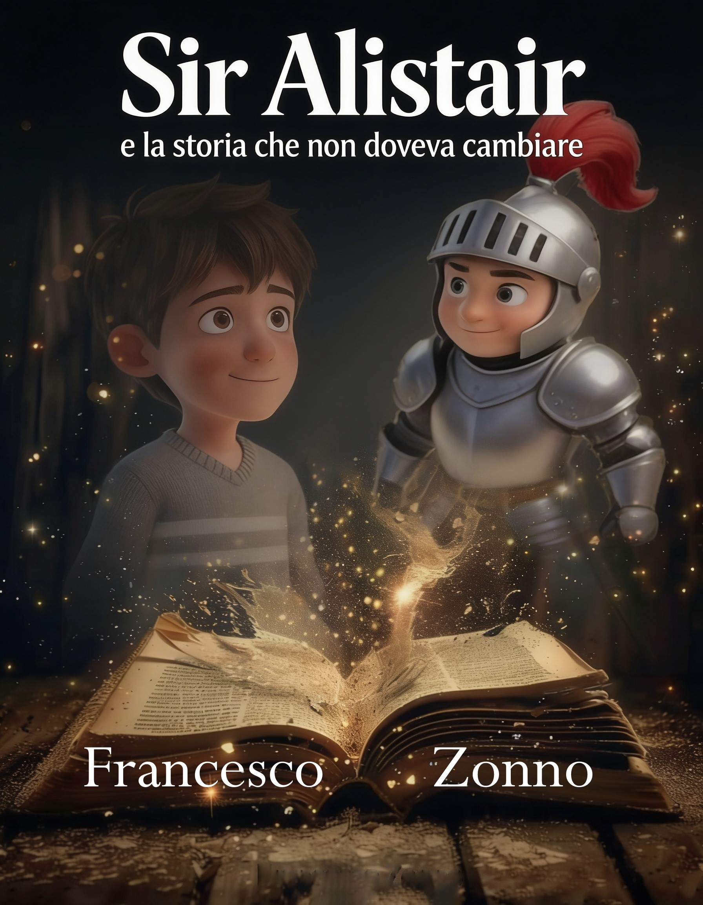
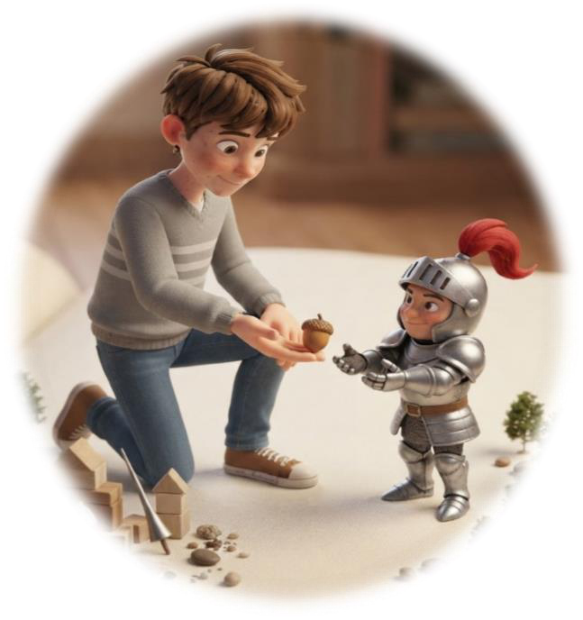
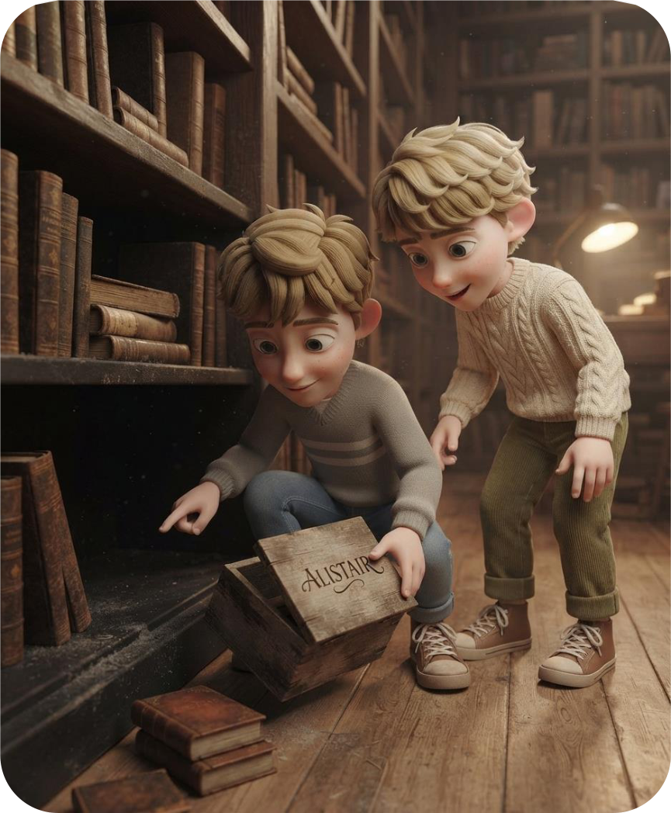
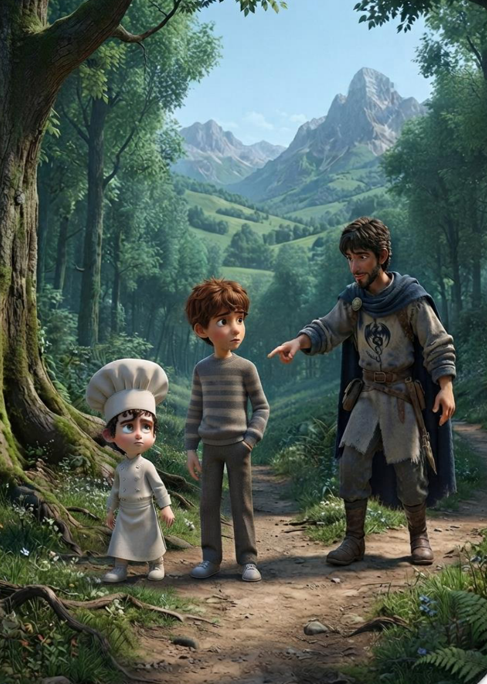

🗝️
Un mistero da risolvere
Un libro che cambia, tracce da seguire e una presenza che sembra conoscere ogni dettaglio della storia.
Cinque anni sono passati. Leo è cresciuto e ha smesso di raccontare le avventure che un tempo lo facevano sognare. Poi ritrova un vecchio libro. E qualcosa, tra quelle pagine, sembra ricordarsi di lui.
Un'avventura tra mistero, amicizia, fantasia e memoria. Con un cavaliere che non ha nessuna intenzione di comportarsi come ci si aspetta da un cavaliere.

A quindici anni Leo ha imparato che non è sempre facile parlare delle cose in cui si crede. Le storie che da bambino raccontava con entusiasmo sono diventate un ricordo che preferisce tenere per sé.
Ma in biblioteca ritrova un libro che conosce fin troppo bene. Accanto a lui c'è Elian, l'amico che ha ascoltato i suoi racconti senza liquidarli come semplici fantasie. Un vecchio biscotto, una pagina che sembra mutare e una serie di indizi riaprono una porta che Leo credeva chiusa.
Questa volta non basterà ricordare ciò che è accaduto: bisognerà capire chi sta cercando di riscrivere la storia e perché.

Il secondo volume porta Leo in una nuova fase della vita e mette alla prova il rapporto tra ciò che ricordiamo e ciò che scegliamo di diventare.
Un libro che cambia, tracce da seguire e una presenza che sembra conoscere ogni dettaglio della storia.
Leo deve fare i conti con il passato e capire se una storia appartiene soltanto a come è cominciata.
Alistair, Fiammetta, Elian e gli altri riportano in scena ironia, stranezze e incontri inattesi.
Le illustrazioni originali del volume accompagnano Leo dentro una storia in cui il confine tra libro e realtà torna a farsi sottile.


Il libro è il secondo volume della trilogia di Alistair, che segue Leo dall'infanzia all'adolescenza e poi attraverso l'intera vita. Per cogliere tutti i richiami e l'evoluzione dei personaggi, la lettura inizia dal primo volume.